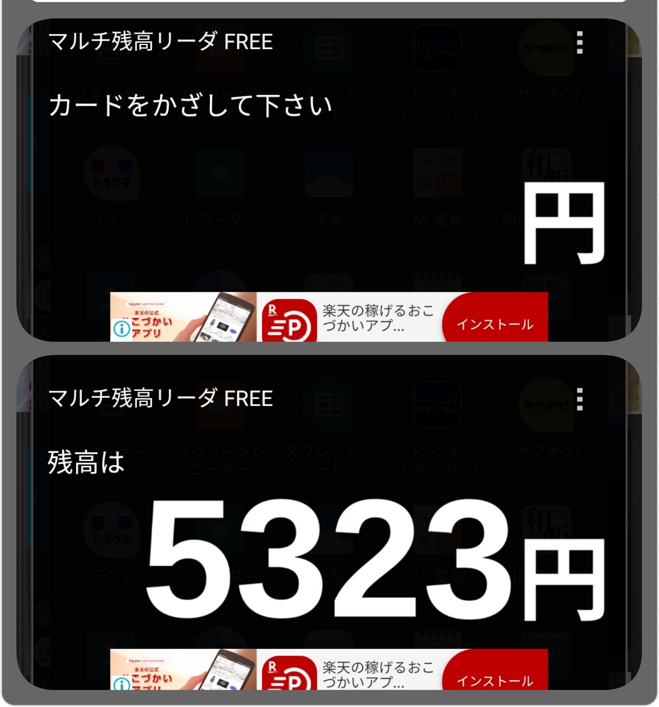
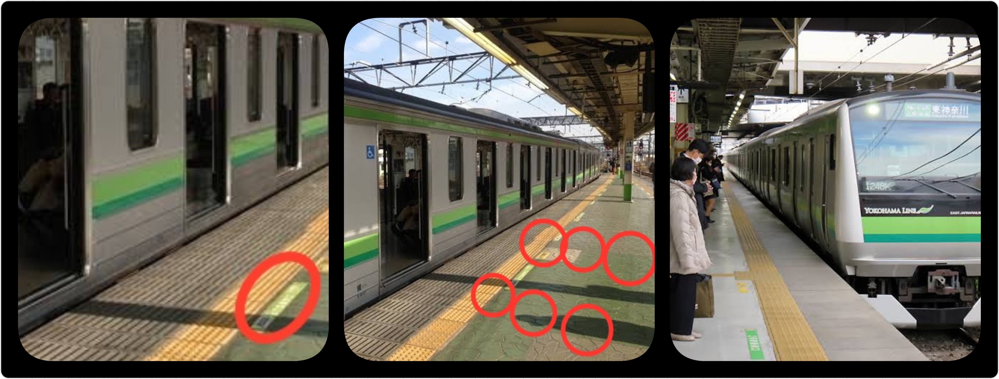
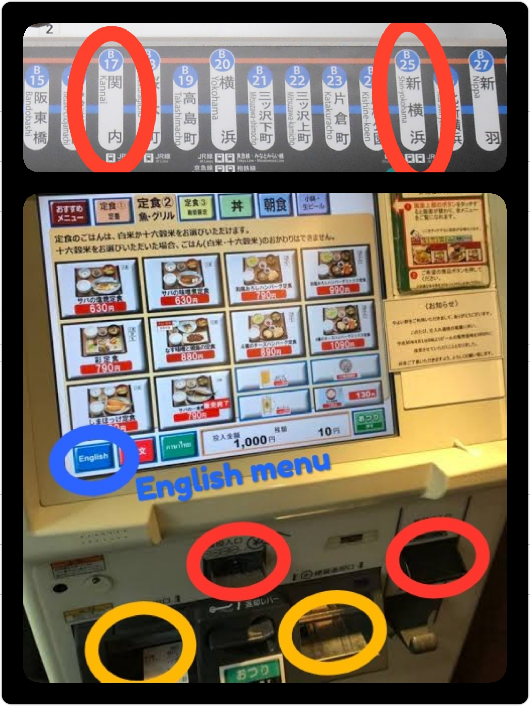
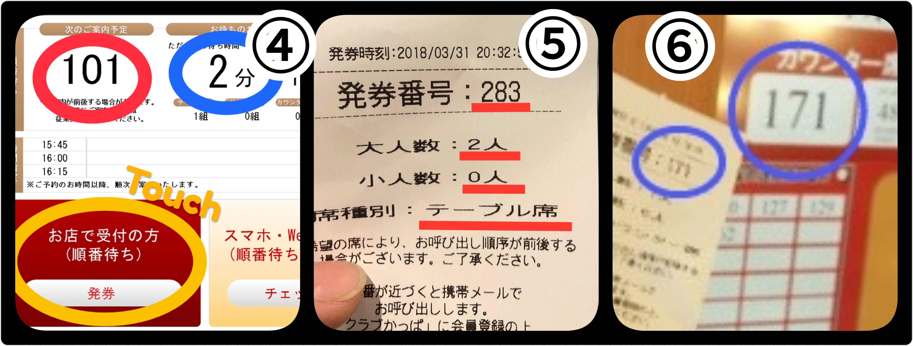

PASMO is a prepaid e-money card for moving with buses and trains, shopping. Around ShinYokohama, PASMO is also convenient just as same as Suica.
In ShinYokohama station, it is quite difficult to get Suica. Because there are only a few vending machines for Suica and they are too far from Shinkansen exit. (Even many of japanese would NOT reach there)
You can buy PASMO with the ticket vending machine at Yokohama subway Line, where is at B2F floor in ShinYokohama Station.
After getting off Shinkansen, go to the concourse. You can found 3 exit gates of Shinkansen above pictures.
At the concourse, you stand in front of the timetables of Shinkansen. Then on the left-hand side, you can see downstairs to the gate of Yokohama Subway.


At the bottom of downstairs, you can find the ticket vending machine of Yokohama Subway.

Please see above pictures following order,
①②
③④
⑤⑥
①Touch PASMO button.
②Touch 'issue PASMO'.
③Touch Red Circle of the picture. This means you buy unnamed PASMO. I recommend unnamed PASMO for short stay or sightseeing. The other is 'named PASMO'. If you want to know the difference in detail, please search other sites :)
④Touch price as initial top-up for PASMO. You can choose 1000yen, 2000yen, 3000yen, 4000yen, 5000yen and 10000yen. Please note that this includes 500yen for PASMO's deposit. So if you choose 3000yen, you will get 2500yen left on PASMO.
⑤Put cash. You can also use coins. Put coins into red circle of the picture.
⑥You can get finally your PASMO and changes.
Please see above pictures following order,
①②
③④
Note: PASMO cannot be topped up over 20000 yen.
①Touch PASMO button.
②Touch 'charge, history indication, history printing'.
③Put your PASMO
④Touch the button of charge amount of money you want.
The payment is just same as above buying PASMO.

You will find above machine at every Yokohama subway stations. But it can accept ONLY 1000 yen bill.
⓪Touch ENGLISH button, if you want.
①Insert your PASMO.
②Choose amount of money you want top up.
③Put 1000 yen bills ONE BY ONE.
④If you want receipt, push PRINT button during blinking.
Take your PASMO.
If your smartphone has android and NFC, for example which means you can use google pay, you can check PASMO balance with following app.
Launch the app, then touch your smartphone on your PASMO. You can see PASMO balance(yen) like below.

When you want to ask someone in japanese, please tap buttons below. Japanese translations would be shown. It would be help you.

In ShinYokohama station, you can get on both Yokohama Subway Lines and Yokohama Lines. You can enter the ticket gate by touching pink circle of above picture with PASMO. At that time, please note blue circle of above picture. This upper arrow mark (⇧) means the gate can accept touching of PASMO. If not, usually red cross mark(❌) will be shown, the gate would not accept any touching of PASMO.
When exitting the gate, you also need touching of PASMO.

At the front of each platform's door, You can wait for coming trains (see above picture on the left). While waiting, get in line like red circle in the middle of above picture. It is common scene of waiting trains like above picture on the right. Please note that you have to wait getting on the train until passengers getting off.

At the front of each green marks on the platform, You can wait for coming trains (see red circle of above picture on the left). While waiting, get in line like red circle in the middle of above picture. It is common scene of waiting trains like above picture on the right. Please note that you have to wait getting on the train until passengers getting off.
When you want to ask someone in japanese, please tap buttons below. Japanese translations would be shown. It would be help you.
Wait the bus at the bus stop in red circle of above picture on the left.
If someone has already waited, get in line like red arrow of above picture on the left.
The bus will come so that there is the door in front of bus stop. After getting on the bus, you will see the machine like above picture on the right. Touch red circle with your PASMO, then payment is completed.
All buses start from Shinyokohama, you can only pay in advance with PASMO, 216yen, wherever you will get off.

When you are going to get off at next bus stop, push the 'getting off' button like red circle of above picture on the left. Then turn on the japanese message which means 'The bus will stop at next bus stop'. Let's get off after the bus will stop and the door will open.
When you want to ask someone in japanese, please tap buttons below. Japanese translations would be shown. It would be help you.
It is so reasonable japanese restaurant. And you don't need speaking japanese so much.

To go to nearest YAYOI-KEN, get off Kannai(B17) from Shinyokohama(B25) via Yokohama Subway.
You will find the ticket vending machine as soon as entering YAYOI-KEN. Push 'English' button, put enough bills and coins into blue circle of above picture at bottom, and choose what you want. Then you can get ticket and changes from yellow circle of above picture at bottom.
You can sit on any seat you want. Usually the staff will come to take your tickets and confirm orders. You don't need to order to say anything, because they will only check tickets.
If the staff doesn't seem to come over 5 minutes, please call him by the bell on the table and give your tickets.
You can have allyou-can-drink green tea and water by yourself.
After finishing dishes, you can leave there freely.
The place of nearest YAYOI-KEN is shown below.
It is nearest KAITEN SUSHI from Shinyokohama and not so crowded in weekday 14:00-17:00.
① Kappasushi's nearest station is Kita-ShinYokohama(B26) next to ShinYokohama(B25).
② This is the appearance of Kappasushi.
③ You can find the reservation machine near the entrance.

④ Touch the button of yellow circle, then choose table seat(テーブル席 in japanese) or counter seat(カウンター席 in japanese), and input how many adults(大人 in japanese) and child(子供 in japanese).
⑤ Then you can get the ticket with the reservation number. In the pictire, the number is 283, the number of adults is 2, child is 0. The type of seat is table seat. You can know what number will be called next in the picture ④'s red circle. The blue circle means eatimated time(2分 means 2 minutes in english) of next number to be called.
⑥ When your number is same as the machine shows, show your ticket to the staff. Then you will get your seat number, let go your seat by yourself.

⑦ You will find the 'multilingual' button on the touch panel. Touch it and choose English. All items would be shown in English on touchscreen.
⑧ There are chopsticks in the box of blue circle. It is the soy sauce of red circle. It is the wasabi of pink circle. It is the green tea powder of green circle.
⑨ Put two or three dashes of the green tea powder into the cup. Next push the black button by the cup which you keep holding. Then hot water will be poured into the cup. Please pay attention for the spout.
⑩ You can take plates from the lane of red circle as you want. Never return the plate which you have taken. If you order something by touch screen, the plate will come from the express train on the belt of blue circle. The train will bring your plates and stop at front of you. You take plates and press the button on touchscreen, then the train will leave.
⑪ When you finish dishes, it is common manner that stack plates every 10 plates. Then touch the touchscreen to check. The staff will come and count up your plates and either give you a paper bill or enter it electronically, while showing you the total. You take the table card (its a little clipboard) to the register and pay.


If you want to have delicious breads, go to Breadbox at KitaShinYokohama(B25) next to ShinYokohama(B26).

This announcement of japanese is shown on the door of the store. Above picture is translated it in English. My wife loves quality, taste and cost of these breads!

The store opens 9:30-16:00, but it closes earlier if all breads were sold out. I recomment let you go there in the morning.

This is on sale today. But in this store all breads are so cheper than common such store in japan.

If you finish choosing and taking breads, go to the register and pay.
Iekei, or house style ramen(家系), is a style of ramen with fatty pork-soy-sauce flavored soup with thick flat noodles.
Yokohamaya is near Nippa(B27). Please refer to the map below.
This is the appearance of Yokohamaya. After entering, you may be asked how many people in Japanese. Then you can make a gesture with your fingers.
This restaurant is very busy in 12:00-14:00, so I strongly recommend to avoid visiting at that time.
The yellow circle of the picture on the bottom, is the register and they can accept payment only with cash.
This is the menu. I recommend the Ramen. It is enough to enjoy Iekei(家系) ramen. If you enjoy much more, please order B or C set.
Call the staff with raising your hand and order them.
On the table, there are many kind of spices.
①Sichuan vegetables: Take them on the small dish, and refill free.
②Hot miso: If you want to make the ramen more hot, put it. Pay attention that it is so hot.
③Red pickled ginger
④Ground garlic
⑤Chili oil
⑥Vinegar
⑦Dumpling sauce
After finishing your meal, you take the receipt on the table and go to the register to pay.

CanDo is the nearest 100yen store from ShinYokohama and about 5 minutes on foot. The map is shown below.

CanDo is 4F in Prince PePe which is the shopping plaza of ShinYokohama Prince Hotel. And you can use PASMO with payment.

My recommendations of CanDo's items are like above.
①Fisheye Lens
Do you know the fisheye lens? It is one of common accessories of DSLR camera. Many users of action cameras like Gopro, use it for getting more wide views and spherical views. You can buy such lens for smartphone by only 100yen.
②Silicon magnet clips
This clip is made of silicon, rubber, steel and magnet. You can bend it freely and fix it by magnet so that you roll up cables around PC, earphones and headphones, and clips billls or memos.
③Wire Book Holder
When reading books, studying and learning, do you want to hold books so that it is easy to do? You can do it with the wire book holder. I also use it for either notebookPC or tablet.
④Ice Tray
Have you had a trouble that there was no ice when someone came home in happen? At such time, the ice tray would be useful. In CanDo there are many kinds, which means ice shapes, of ice trays. So I have 3 trays in my freezer :)
There are many Daisos in Yokohama, but the Daiso of following map is largest. I strongly recommend to go there.

Daiso's nearest station is Center-Minami(B29) from ShinYokohama(B25).

①From Center-Minami, go to KOHOKU TOKYU Shopping Center.
②Daiso is 7F.
③The floor of Daiso is so large, but it is easy to meet again if you will enjoy shopping separately. Because many props on the floor are numbered.
I would recommend some items it is pretty useful.

Easy sealer
With easy sealer you can reseal foil bags of snacks so that they stay fresh till the last bite! (Batteries sold separately)

Bathroom sink garbage catcher
With the bathroom sink garbage catcher, you can get garbages of bathroom sink easily. Pull the drain cap out, then put the caatcher on it like above picture.

Magnet case
With the magnet case, you can put spices on the refrigerator. My wife loves tea, so many tea leaves are put on the wall by it.

Egg Timer
With the egg timer, you can get perfect boiled eggs easily. For a start, the indicator on the egg timer will be in pink. As it sits in the pot of boiling water, the indicator will gradually change from pink to white. If you notice that the indicator is white at the area where the word "SOFT" is. Remove the eggs when the indicator turned white at the area between SOFT and MEDIUM (second line from the bottom). And if you would like a hard boiled egg, wait for the pink indicators to change to white.
It is the supermarket in Kita-ShinYokohama(B26), next to ShinYokohama(B25). The map is shown below.
At the entrance you take the shopping cart and carry the shopping basket on it like above picture.
When finishing shopping, get in line of each register. In your turn, put your baskets on front of the register. After processing payment, pay and take the baskets.
There are 3 Fit Care stores near ShinYokohama. You can buy many kinds of medicines there with PASMO. The maps of each store are shown below.
1F floor of ShinYokohama station.
B1 floor of shopping plaza, Prince PePe
The nearest store from NISSAN stadium
You can take cold medicines, pain killer, fever reducer and etc. And you can pay with PASMO. There are my recommendations below. If you want to but it, show the picture to the staff.
Cold medicines
Motion sickness pill
Eye drops
Cooling gel sheet

Ointment
antiseptic (you can also buy it both CanDo or Daiso)
When you want to ask someone in japanese, please tap buttons below. Japanese messages would be shown. It would be help you.
Station
Bus
Distination
Restaurant
Let me know if you want something, have any question.
yamashimo.k(@)gmail.com
© Copyrights Minimal. All Rights Reserved